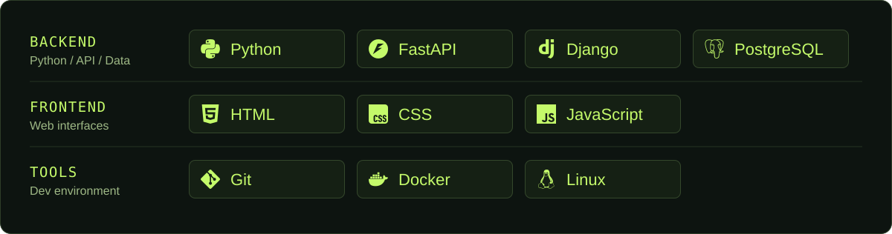

Привет, я Никита.
Разрабатываю на Python: веб-сервисы, API, ботов и интеграции.
Работаю с данными и автоматизирую рутину.
- Backend — FastAPI, Django, REST и интеграции между сервисами.
- Данные — SQL, PostgreSQL, анализ и применение нейросетей.
- Frontend — создаю интерфейсы с помощью AI.
Стек
